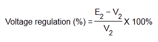
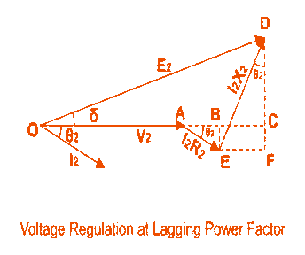
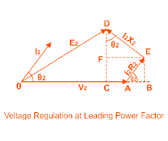

Voltage Regulation of Transformer
Explanation of Voltage Regulation
• Expression
Voltage Regulation for Lagging Power Factor
Voltage Regulation for Leading Power Factor
What is Voltage Regulation ?
The voltage regulation is the percentage of voltage difference between no load and full load voltages of a transformer with respect to its full load voltage.
Explanation of Voltage Regulation of Transformer
Say an electrical power transformer is open circuited, means load is not connected with secondary terminals. In this situation, the secondary terminal voltage of the transformer will be its secondary induced emf E2. Whenever full load is connected to the secondary terminals of the transformer, rated electric current I2 flows through the secondary circuit and voltage drop comes into picture. At this situation, primary winding will also draw equivalent full load current from source. The voltage drop in the secondary is I2Z2 where Z2 is the secondary impedance of transformer. Now if at this loading condition, any one measures the voltage between secondary terminals, he or she will get voltage V2 across load terminals which is obviously less than no load secondary voltage E2 and this is because of I2Z2 voltage drop in the transformer.
Expression of Voltage Regulation of Transformer
Expression of Voltage Regulation of Transformer, represented in percentage, is

Voltage Regulation of Transformer for Lagging Power Factor
Now we will derive the expression of voltage regulation in detail. Say lagging power factor of the load is cosθ2, that means angle between secondary electric current and voltage is θ2

Here, from the above diagram,
Angle between OC & OD may be very small, so it can be neglected and OD is considered nearly equal to OC i.e.
Voltage regulation of transformer at lagging power factor,
Voltage Regulation of Transformer for Leading Power Factor
Let's derive the expression of voltage regulation with leading current, say leading power factor of the load is cosθ2, that means angle between secondary electric current and voltage is θ2.

Here, from the above diagram,
Angle between OC & OD may be very small, so it can be neglected and OD is considered nearly equal to OC i.e.
Voltage regulation of transformer at leading power factor,
 by
by